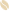
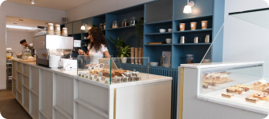

Vind jouw vegan koffie café

Over GreenBeanGuide
Ontdek de leukste vegan koffietentjes in Amsterdam met GreenBeanGuide! Onze website helpt je de beste plekken te vinden voor heerlijke biologische koffie en plantaardige snacks. Perfect voor elke koffieliefhebber die duurzaam wil genieten!
Lees meer
Locatie
Bekijk alle locaties